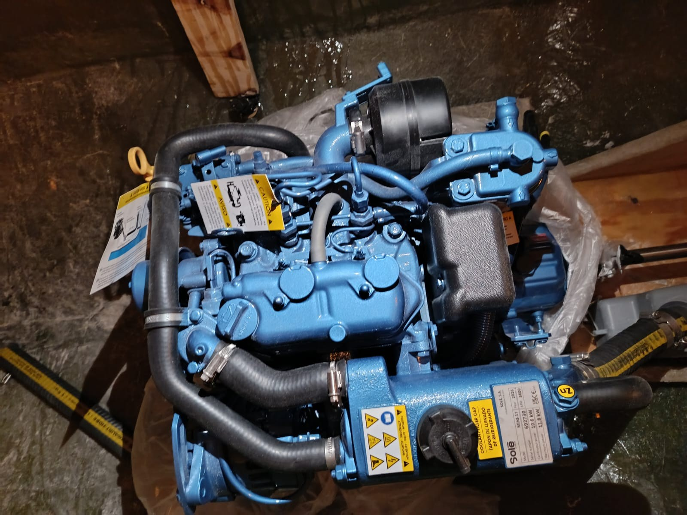

Mapping the control chain of a rescue vessel
System architecture, engine interfaces and navigation planning.

Work across vessel subsystems
I prepared the architecture and BOM around rudder and throttle control, power, safety equipment and navigation. The work included CUAV V6X and ArduRover configuration planning.
Make interfaces visible
The documentation specified RTK, AIS, NMEA2000, companion compute and communications interfaces. Original engine, rudder and controller photographs provide physical context for the integration work.
Describe the evidence accurately
The engagement supports design, documentation and integration responsibilities. It does not establish measured sea-trial performance, a certified autonomy level or an operational rescue deployment.